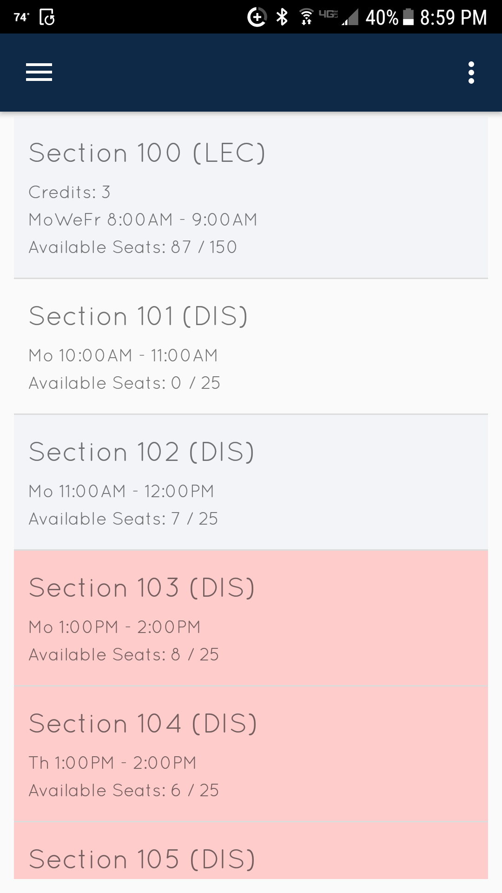
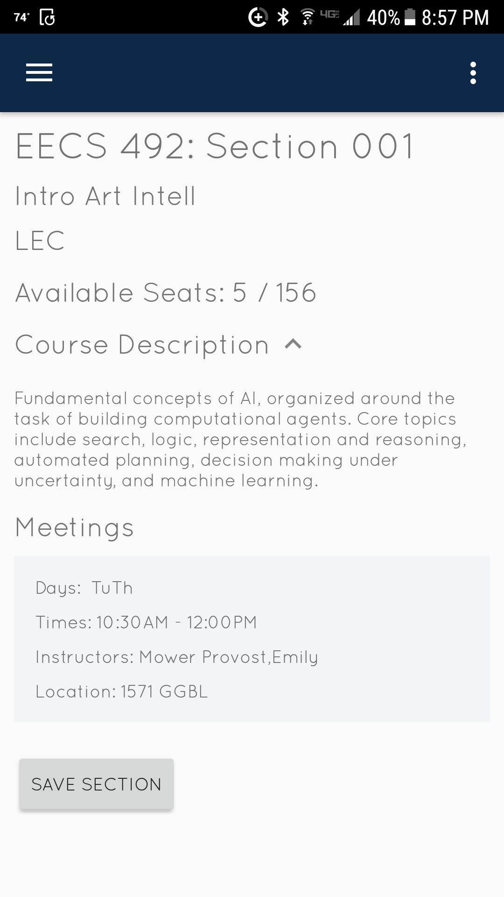

Saad Mallick
University of Michigan - Ann Arbor
Profile
I’m Saad Mallick, an undergraduate Senior at the University of Michigan - Ann Arbor studying Computer Science and Data Science. I’m excited about exploring the latest IT technologies and developing new applications.
My most recent achievements include:
- My Software Development internship at Target Corporation, where I contributed to a back-end server-side system which processes all of Target’s transactions.
- A screen sharing application (a.k.a. Miryr) that captures a computer screen's contents and displays it on a mobile device in real-time.
- A mobile application that allows students to search, view, and save University of Michigan course details on mobile devices.
Education
University of Michigan - Ann Arbor
GPA: 3.6/4.0
Key Courses Completed:
- Introduction to Artificial Intelligence
- Operating Systems
- Data Structures and Algorithms
- Database Management Systems
Technologies used:
- C/C++
- Java
- Python
- SQL
Work Experience
Target Corporation
Researched, designed and implemented software to load test back-end services. Contributed to code interfacing with vendors processing consumer transaction data.
Achievements
- Spearheaded development of a multithreaded API to simulate a large-scale of users requesting multiple transactions
- Analyzed asynchronous code to interface simulated clients with a gRPC server
- Researched open source load-testing libraries and extended their capabilities through custom protocols/module development to coordinate with the backend services
- Developed SOA services to generate server analytics and automatically push them to Confluence
- Integrated CI/CD pipeline to automatically detect performance failures in code when exposed to a large number of users
Technologies used:
- Scala
- Kotlin
- gRPC
- Spring Boot
- Gradle
- Drone
- Java
- Multithreading
- Data Structures and Algorithms
- Load and Performance Testing
- Automated Testing
- Infrastructure
Coding4Youth
Led multiple bootcamp-style programming classes for middle and high school students. Selected to publish on-demand videos for a prototype service.
Achievements
- Taught various programming languages and software packages including AP Java, Game Development with Greenfoot, Scratch, Computercraft (Lua-based Minecraft coding), and HTML/CSS/JavaScript
- Created online audio/video enabled courses for on-demand instruction
- Created certification exams for future instructors
Technologies used:
- Java
- JavaScript
- HTML/CSS
- Lua
- Communication
- Teaching
Projects
Developed a screen-sharing Android application to mimic modern-day drawing tablets. Users can view as well as control their computer on an Android tablet in real-time via a Bluetooth/Wifi connection
Achievements
- Researched modern video compression and streaming algorithms and developed unique algorithms for instantaneous communications between tablet and computer
- Analyzed algorithms to improve speed for rapid display
- Developed and debugged asynchronous code for server communications
Technologies used:
- Java
- Kotlin
- Android
- Algorithm Analysis
- Network Communications
- Multithreading
University of Michigan Scheduler
Created mobile application that allows students to view, search, and save University of Michigan course details on mobile devices.
 
Achievements
- Interfaced with the University of Michigan published REST APIs and developed the mobile application to display course details in an eloquent user interface for students on the Android platform
- Developed clean and reusable screens for future extension
Technologies used:
- Java
- Android
- User Interface Design
Skills & Tools
Technologies
-
Java
-
C/C++
-
Python
-
Android
-
Spring Boot
-
Scala
-
Kotlin
-
SQL
-
HTML/CSS/JavaScript
Others
- Data Structures and Algorithms
- Artificial Intelligence
- Multithreading/Synchronization
- DevOps
- Code Review
- Git
Awards
-
Top Student Award in Computer ScienceAwarded for achieving the highest GPA in Freshman year
-
Talented and Gifted StudentSelected by PCCS TAG (Talented and Gifted) program (in elementary and middle school) for highly motivated and academically gifted students.
Interests
- Artificial Intelligence
- Autonomous Robotics
- Machine Learning
- Multithreading
- Operating Systems